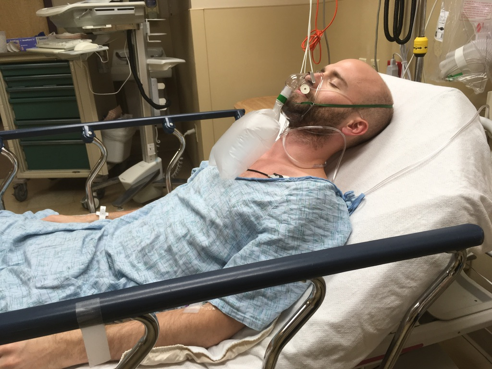
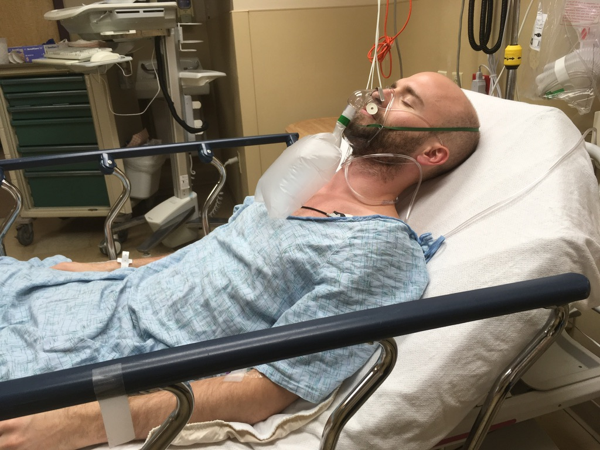
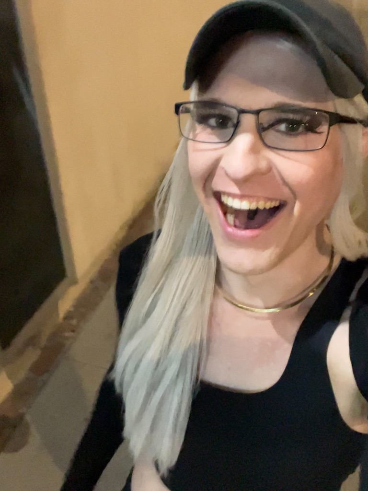
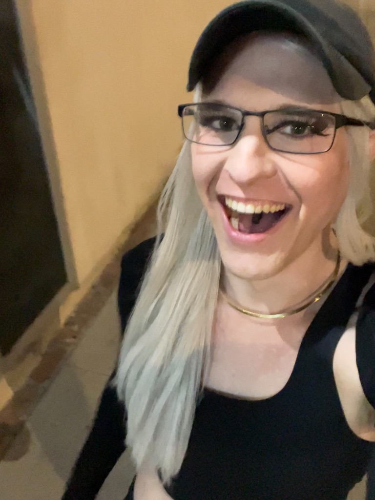

👺🧟♀️ The Hell House of
Mike McOrmond
&
Tammy McOrmond
(An Abuse Statement)
A preface regarding my hormone, medication, and other health choices:
- (3) Therapists (LCMHC, LPC, & LMFT), an NP, a psychiatrist, and my current long-term PCP (MD) have all recommendeded, align on, and back up my current approaches.
Text Statement:
October 19th, 2025
- I'm choosing to face, process, and share the truth. A horrifying reality hidden inside decades of internalized lies, shame, and confusion.
- I listened to Jennette McCurdy’s book “I’m Glad My Mom Died” over the summer. It's amazing. And, for my own sake, I’m now opening up about the abuse I received as a child and an adult at the hands of Mike McOrmond and Tammy McOrmond.
- What follows is a list of moments, behaviors, and patterns. Overt examples of abuse and neglect that, in total, describe a process of dehumanization, indoctrination, and exploitation so comprehensive I struggle to bear gaining awareness of more than a piece at a time.
- These horors were performed and reinforced, onto and into me, from birth onwards, for 20 straight years. After that, when I eventually moved out of Mike & Tammy's house, I spent the next 13 years trapped in the same cycles of abuse. Between remote communication with family, proxy manipulation, and opportunistic covert abusers out in the real world, I was hopelessly trapped.
- I had been severely depressed since puberty, but around age 22, I fell into a deeper state of hopelessness than ever before. A short while later, "out of necessity", I ended up returning to their house, and renting a room from Mike. I stayed with them for another 3 years.
- If not for the massive system shock of a near fatal illness and hospitalization in 2019, and then another near death experience more recently, I believe it's very likely I never would (or could) have woken up from their programmed nightmare.
- Actually, if I'm being honest, I still haven't. But climbing far enough out to write this statement was, and is, the best I can do. It will have to be enough. This as far as I can go. This is all I have.
Content Warning: The below descriptions of child abuse cover the full spectrum of violation a human can experience: physical, emotional, mental, sexual, and spiritual.
Here is how I was turned from a newborn infant into a narcissist's unknowing, loyal, and near-permanent, slave:
- Having meals withheld when I failed to perform “instructed” (commanded) tasks within a specified timeframe. Particularly school or chore (work) tasks.
- Having my head and hair buzzed off by Tammy, against my will, despite my visible distress and protests, while at least one (likely 2+) siblings watched and laughed.
- Being spanked, sometimes while clothed, other times while having to strip and expose my butt and legs, Mike rubbing my butt with his hands, both parents using statements like “I don’t like doing this to you”, and “it’s for your own good”, being left with bruises from the spankings, and these events usually playing out while bent over Mike and Tammy's marital bed.
- Being forced, coerced, and brainwashed into covert incest behaviors and beliefs, like:
- Kissing Tammy on the lips to make Mike jealous.
- Having to emotionally caretake Tammy and having to internalize / align my inner world into matching her resentment towards Mike.
- Confessing (turning myself in) to Mike and / or Tammy when I had done, observed, or encountered anything sexual. Then being asked about such experiences with a disturbing and inappropriate level of depth. Example: Having to, in detail, describe "erotic media" I had looked at while sitting on Mike and Tammy's marital bed with them.
- Being forced to undergo “deliverance prayer” by Mike and the lead pastor of the church we attended after mentioning to one of my sisters that my dream was to live in a shack in the woods. They told me I had “fear of failure”. (I simply wanted to be somewhere I'd no longer be a "disappointment, burden, or bad kid". Read: The toxic family system's chosen scapegoat, emotional dumpster, and whipping boy.)
- Mike sitting down with me, out of the blue, to ask about and discuss whether "I’ve ever had sexual urges toward the cat”.
- Being taught, often in detail, about rape, violence, prostitution, incest (Noah), medieval torture methods (crucifixion, iron maiden, racking, circumcision, etc) at an age far too young to be appropriate. Both during at-home "bible" teaching sessions and during our church's (main service) sermons.
- Tammy randomly forcing me to hang out with who she chose. In one case, even manipulating another kid's mother into forcing a one-off, short-notice, afternoon he and I spent together. (He was nice. Thanks bro.)
- Being told "you're no longer allowed to spend time with your friend" (a neighbor) by Mike. Initially out of the blue, for no reason, then offered "I don't like you spending time alone with that girl". Next, I was made to call her and tell her this myself. Without being able (allowed) to communicate or understand why this decision had been made for me, or being able to address her resulting confusion and emotional pain (presumably over having "done something wrong" without anyone being able or willing to explain what. Classic gaslighting and emotional abuse).
- Being autistic and ADHD (both learning disabilities), never receiving help for either, and being exploited, bullied, and shamed more than other family members for these traits. Abuse and isolation which resulted in me living in a constant state of anxiety, fear, and guilt for "all my failures”. Anything wrong could suddenly become “my fault”. Often, I'd be accused of and punished for “not trying hard enough” or "laziness".
- Multiple times a week, being forced to eat food that made me viscerally (literally) gag and / or nauseous. Not being allowed an alternative OR allowed to skip eating.
- Being brainwashed via:
- Extreme, rigid, and arbitrary (read: child-specific, double-standardized, and moving target) rules and expectations.
- Control, censorship, and forceful "insertion" of information and ideas via pain, punishment, systemic (peer) pressure, and sadistic emotional manipulation.
- "Insertion" being followed by physical, mental, and emotional retaliatory and reinforcement abuse [corporal punishment, public humiliation, system-wide shaming] should one not comply and align with whatever the defined "right" / "true" / "Christlike" perspective, attitude, or behavior was.
- Some topics in particular were so extremely taboo that any deviation or even unintentional appearance of deviation would result in a system-wide shitstorm, punishments, and removal / disposal / confiscation of relevant items. Followed by anywhere from days to weeks of aftermath abuse (usually shaming, guilting, or forcing of "reconciliatory" hoop-jumping until the relevant sadist was sufficiently satisfied).
- Having thoughts, feelings, or expressing oneself in ANY way indicative of being gay, trans, having sexual desire, or embodying sexuality at all were forcefully and violently stomped out. Media with any degree of sensuality was censored and / or removed. (While violence in media was welcomed and normalized.)
- Being interested in, attracted to, desiring of, spending time with, or even communicating with the opposite sex was prohibited:
- Until arbitrary, child-specific, age thresholds were crossed.
- Coerced contractual obligations had been fulfilled ("a proper, respectful of the parents, 'dating for marriage' relationship process was followed", purity contracts which involved signing ones body over to Mike or "divine authority" were used. A process where individuals "belong" to the father until appropriately handed over "to a new authority").
- Unless other requirements were met in order to secure "approval", like only being allowed to interact in group settings, any parties involved being ones Mike or Tammy liked, all interactions being monitored by authority figures, or extensive vetting having been completed.
- This brainwashing was (and is) so effective, that even internal experiencing of any aspects of myself outside the (utterly bullshit) "Biblical Truth" became incredibly difficult to feel, enjoy, or express. I'm still suffering from this. To this day, despite years of therapy, I still experience heart palpitations and fear of violence from others if (when) I choose to express myself with any degree of femininity. Only through extensive ERP, well tuned meds, tons of practice, and an indescribable amount of determination, have I managed to make this statement and, in isolated moments, feel like my real self.
- Taught via force, conditioning, and violence (brainwashing, mind-control) to embody self-sacrifice and suffering as the meaning of life (aka: a martyr complex).
- Taught via force, conditioning, and violence (again, real brainwashing and mind-control) to “forgive” by forgetting anything happened (enabling). Except, this is only applied when convenient or pleasurable for the highest ranking narcissist in the room at any given time.
- Being repeatedly told “you are NOT allowed to say ‘no’”, “you are NOT allowed to express anger / sadness / protest (discomfort)”, and other boundary compromising (annihilating) statements.
- Mike being hypervigilant / on guard / hyper suspicious toward any vehicle or passersby near our residence. And any divergence from "perfectly normal" behavior by the outside world being reacted to with fear, preparatory defensiveness, and a creepy level of covert observation.
- Mike claiming, as a joke, that "my kids are my retirement plan". A statement I witnessed being made as an adult.
- Being home-schooled for all 12 years of my education, under the supposed justification that alternative options would teach "things we don't believe". All 7 of Mike & Tammy's children / my siblings were educated this way.
- (Oh, so there's a reason my artistic expression as a teen featured prison camps, shackles, dungeons, predatory facial expressions, burning alive, and other disturbing themes? HUH.)
- MANY other, often worse things, that:
- A. I witnessed first-hand but have decided to leave for my siblings (or other subjected parties) to discuss, bring justice to, or find closure for.
- B. Were covered up and buried, only to resurface years or decades later.
- C. I can't remember, or my memories are too fragmented to fully / reliably articulate.
- Lastly, and out of concern for communities that Mike and Tammy interact with in the present:
- Why did Mike choose to merge his church and family into one which, a decade later, I (and we, publicly) would find out had a convicted pedophile as one of its elders? For how long did Mike know that the church he chose to merge with had “internally handled” (read: buried and not escalated to appropriate authorities) at least one prior instance of child sexual abuse by the same man?
- A red flag for the community near Mike and Tammy's residence: As of a few years ago, I know that Mike would sometimes spend 1:1 time with a neighbor kid living across the street. I'm unable to text that family, not on Nextdoor, or connected to any relevant neighborhood community. I did manage to text one neighbor. I hope that somehow, some-way, my statement reaches that family.
Hi. Yes, this is Mikey (Michael James McOrmond). I’ve finally had enough therapy, time, and space to recover sufficient memories of what my "parents" did to me, my siblings, possibly other children.
- My body is physically, viscerally terrified to theorize, write, record, and post this. It's taking all I have to summon the internal autonomy to keep going anyway. I’m broadcasting these historical acts of abuse as widely as possible in hope of both further freeing my mind, and protecting others from similar harm. Be it from Mike & Tammy, or their own families, communities, or institutions using similar tactics.
- These liars birthed me into an indoctrination machine and held me there for 35 fucking years. I was trauma bound, made to believe that I was the one responsible, and then abandoned. They punished, harmed, and overpowered me into silence. AS A BABY. And I, too terrified of Mike returning, ceased to move or make a sound.
- They coerced and convinced me into believing that THEIR suffering was my fault. My parents. The two people supposed to love me most. They told me it was a necessary sacrifice. To protect others. And for my own good.
- The "gift" of life? The opportunity to be a human? A wonderful happening? A miracle? God called this "good"? No. Not once. Not ever. I never deserved a single moment of this hell. I was cursed in the womb. Fed on by my own mother. Hated and violated by my father. I have never known love. Only theft, suffering, and pain.
I'm a mess. I'm alive. Breathing. That's enough. I'm through the initial emotional struggle of ripping this band-aid off.
I live far away from Rochester. I couldn't have done this were I still anywhere nearby.
I don’t feel comfortable around other humans. I do have a safe place to stay (my car, which is the best home I've ever had).
I'm still trying to prove to my heart, mind, and body that I'm safe. From Mike & Tammy. From a world they control. From carrying their lies as my own. And from being harmed for speaking the truth.
Doing this felt, and feels, a lot like dying. It's taken me years to recall, admit, and understand my past this clearly. And I'm still actively recovering memories. Somewhat disappointingly, the new ones are usually more gross, not less.
As of October 17th, I am out of money and access to additional debt. If bankrupting myself is the cost of psychological restoration sufficient to make these statements, fine. Worth it.
I have stopped eating. This is both due to my financial situation and the fact that I am deeply distressed by the overall silence and lack of support this message has received. If you wrote me something encouraging, thank you. If you're the one person who loaned me $200, thank you the most.
I have access to car electricity, for now. I lose my fast internet connection sometime today (I cancelled the plan ahead of non-payment). I have 2 months of 5G phone service pre-paid (with 3G tethering).
My only conclusion at this point is that I am, as I once vowed to myself I would, standing largely alone against the world. This is hell.
If you’d like to help: ko-fi, PayPal.
If you’d like to hate or manipulate, good luck.✌️💋
Video Version: (Draft, Messy, Incomplete)
October 12th, 2025
🌎 Finally Breaking My Silence, As Loudly as Possible
I lived. - And I'm not leaving.
Thanks for showing me how to use free speech to its maximal, religious potential. I'm your mirror. Do you like what you see?
 


 
